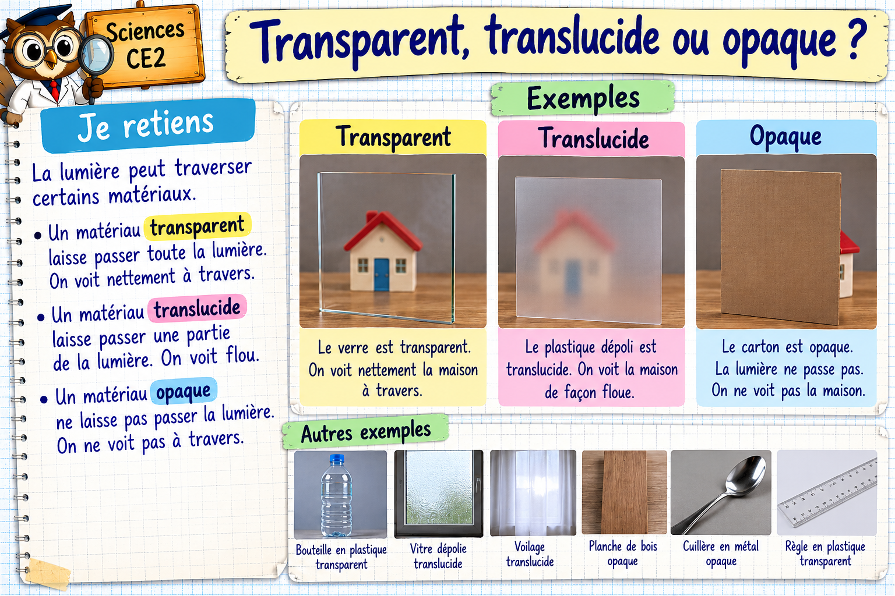

← Sciences CE2
Maître Hibou · Sciences

À toi d’expérimenter !
Réponds à 10 questions. Une bonne réponse est nécessaire pour passer à la suivante.
Question suivante →
J’ai compris cette leçon ✓
Recommencer